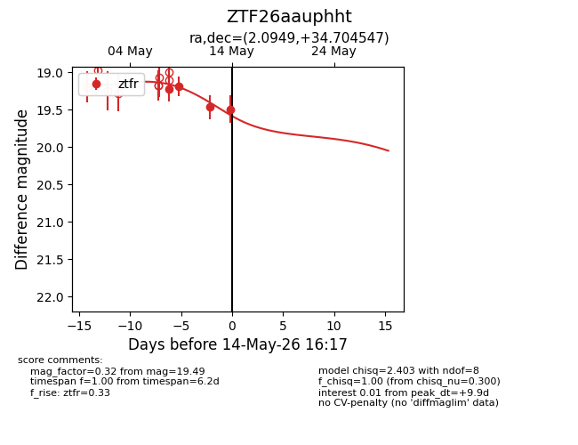
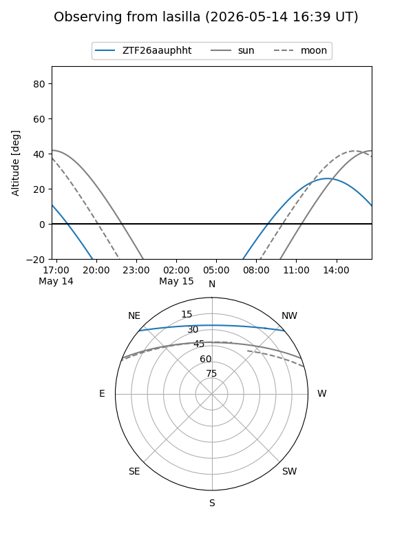
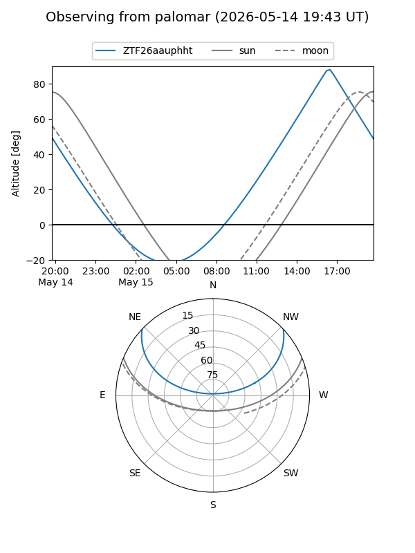
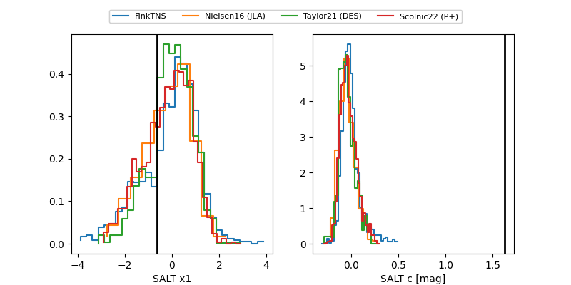

ZTF26aauphht
Target ZTF26aauphht at 2026-05-14 16:19
Aliases and brokers:
FINK: link
Lasair: link
ALeRCE: link
alt names
ZTF26aauphht (ztf,fink_ztf)
Coordinates:
equatorial (ra, dec) = 2.0949,+34.70455
equatorial (HMS+DMS) = 00:08:22.78,+34:42:16.37
galactic (l, b) = (112.9787,-27.33364)
Flags:
Photometry:
last ztfr=19.49
4 ztfr detections
Lightcurve

Visibility


Additional plots
